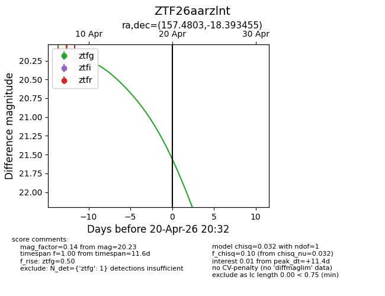
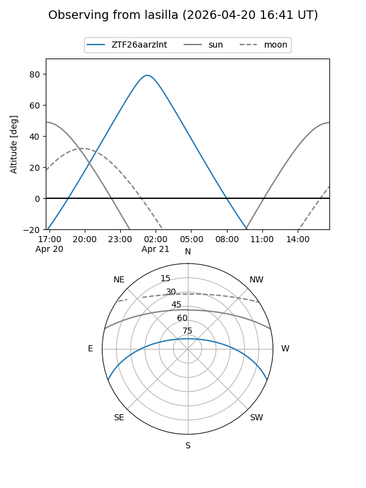
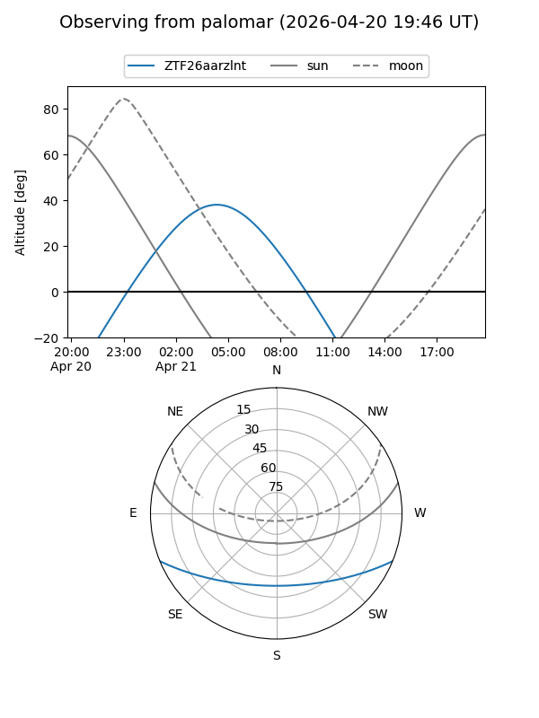
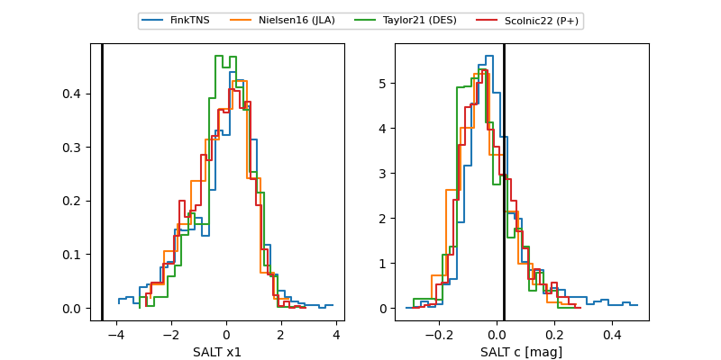

ZTF26aarzlnt
Target ZTF26aarzlnt at 2026-04-20 20:42
Aliases and brokers:
FINK: link
Lasair: link
ALeRCE: link
alt names
ZTF26aarzlnt (ztf,fink_ztf)
Coordinates:
equatorial (ra, dec) = 157.4803,-18.39346
equatorial (HMS+DMS) = 10:29:55.27,-18:23:36.44
galactic (l, b) = (262.0035,+33.00337)
Flags:
Photometry:
last ztfg=20.23
1 ztfg detections
Lightcurve

Visibility


Additional plots
